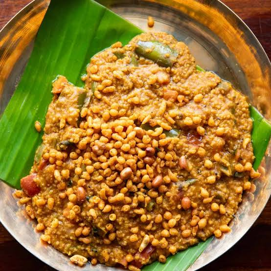
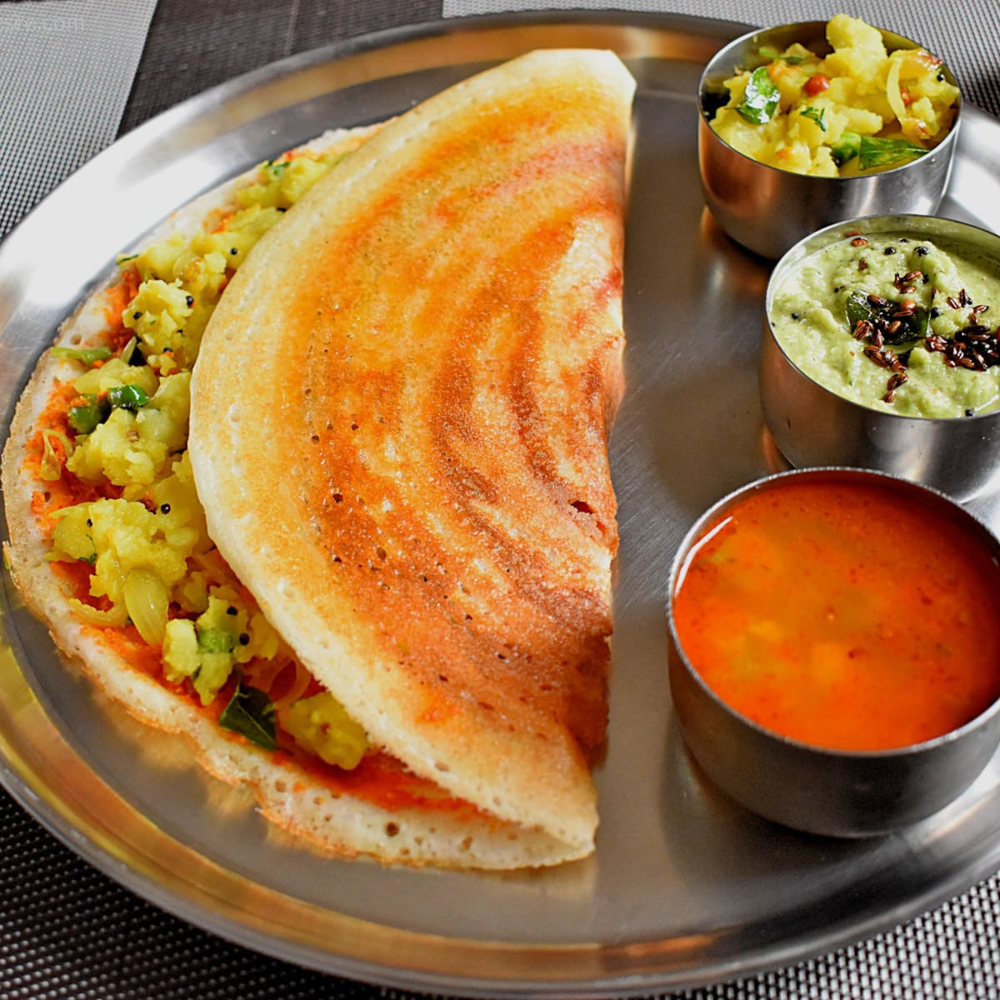
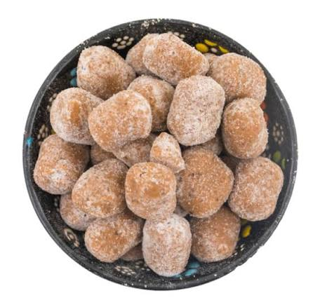

Foods of Karnataka
-

Bisi Bele Bath
A traditional Karnataka dish made with rice, lentils, vegetables and a special spice mixture. It is usually served hot with ghee and crunchy accompaniments.
-

Mysore Masala Dosa
A popular South Indian dish: a crispy dosa spread with spicy red chutney and filled with potato masala.
-

Mysore Pak
A famous sweet from Mysuru, traditionally prepared using gram flour, ghee and sugar.
-

Ragi Mudde
A traditional dish made with finger millet flour and water, commonly eaten with sambar, saaru or other spicy curries.
-

Dharwad Peda
A popular milk-based sweet from Dharwad, known for its unique taste and brown colour.